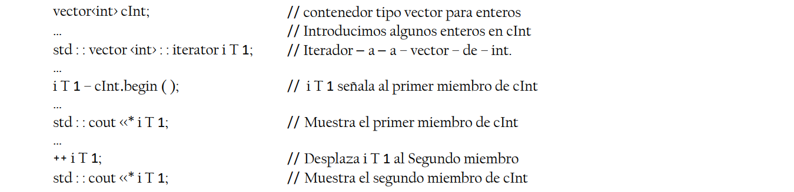

En La Estructura De Datos Abstractos
Una estructura o tipo de datos abstracto (ADT) es una clase o módulo de programa que contiene:
- Datos privados; con una determinada estructura los programas que usan la clase son independientes de la forma en la que éste se implementa.
- En el nivel mas alto de abstracción estarían los tipos de datos abstractos (TDA)(TAD), éstos se pueden ver como modelos matemáticos sobre los que se definen una serie de operaciones. En realidad son una formalización del concepto de dato que el programador considera adecuado para resolver el problema.
- Cumple con los principios de abstracción, ocultación de la información y se puede manejar sin conocer la representación interna.
Estructura de Datos
Una estructura de datos es la implementación física de un tipo abstracto de datos. Se reserva esta definición a la representación física de los datos. Son una forma de organizar los datos en la computadora, de tal manera que nos permita realizar unas operaciones con ellas de forma eficiente. Es decir, igual que una array introducimos un dato y eso prácticamente de inmediato, (no siempre lo es), según qué estructuras de datos y que operaciones.
Algunos Tipos De Datos Abstractos Son:
TDA Lista:
Dado un conjunto D, una lista de elementos de dicho dominio es una secuencia finita y ordenada de elementos del mismo. La lista es un contenedor de objetos que pueden que pueden ser insertados, eliminados y accedidos de manera flexible y no estricta como las pilas y colas.

TDA Pila:
Una pila es una lista de elementos de la cual sólo se puede extraer el ultimo elemento insertado. La posición en donde se encuentra dicho elemento se denomina tope de la pila.
TDA Cola:
Es un tipo de datos abstractos que almacena un conjunto de datos que poseen una llave pertenecinete a algún conjunto ordenado, y permite insertar nuevos elementos y extraer el máximo (o el minimo, en caso de que la estructura se organice con un criterio de orden inverso).

Array
Es un tipo de datos abstracto que almacena un conjunto ordenado, y permite insertar nuevos elementos y extraer el máximo (oel mínimo, en caso de que la estructura se organice con un criterio de orden inverso).
Montículos Binarios
Un montículo de mínimos es un árbol binario semicompleto donde el componente en la raíz es menor que todos los recursos en el hijo izquierdo y en el derecho, y los dos hijos son a su vez montículos de mínimos. Equivalentemente, el factor en cada nodo es menor que los recursos en las raíces de sus descendientes; de esta forma, la raíz del árbol tiene el mínimo de todos los elementos en el árbol.
Diferencia entre estructura de datos y tipos de datos abstractos
Estructura de datos
Es la estructura de programación que se selecciona para representar las características de la entidad modelada.
Tipos de datos abstractos
Son funciones que permiten hacer uso de la estructura de datos, y que esconden los detalles de dicha estructura, permitiendo un mayor nivel de abstracción.
Que es la abstracción
Una abstracción es la simplificación de un objeto o de un proceso dela realidad en la que sólo se consideran los aspectos más relevantes.
Tipo de Abstracción
01
La abstracción funcional
La abstracción funcional surge de la simple idea de crear procedimientos en diferentes partes del
programa mediante un nombre.
02
Las abstracciones de datos(=clase)
La primera aplicación a los datos está en los propios tipos de datos básicos de los lenguajes de
programación.
Metodología de la programación de un TDA
Para la programación de un TDA deberan realizarse tres pasos fundamentales
Análisis de datos y operaciones
Especificación del tipo de datos abstracto
El lenguaje idóneo para poder definir adecuadamente las especificaciones de un TDA es el matemático.
Implementación
Para la implementación del TDA es fundamental disponer de mecanísmo que permitan ENCAPSULAR, el tipo de dato y sus operaciones, y OCULTAR la información al programador usuario.
Eficiencia de estructura de datos
Las estructuras de datos tienen como objetivo facilitar la organización, con el propósito de que la manipulación de ello sea eficiente. Por eficiencia se entiende la habilidad de encontrar y manipular los datos con el mínimo de recursos tales como tiempo de proceso y espacío en memoria.
Tiempo de ejecución
El Tamaño De Entrada
El tiempo que tarde un algoritmo en ejecutarse normalmente dependerá de la cantidad de datos que reciba a la entrada.
El Tiempo De Ejecución
Inclusive en la misma máquina, el mismo algoritmo tarda en ocasiones muchísimo más tiempo en ofrecer el resultado que otras, gracias a componentes como la época que consume las demás aplicaciones que se permanecen ejecutando, o si hay suficiente memoria RAM en el instante de llevar acabo.
Interfaz y Herencia Múltiple
La herencia de múltiples interfaces permite que un onjeto herede muchas firmas de métodos diferentes con la advertencia de que el objeto heredado debe implementar esos métodos heredados.
Herencia Múltiple
La herencia múltiple sin restricciones presenta:
- Anomalías.
- Atributos del mismo nombre.
- Métodos iguales con distinra implementación.
El esquema de la figura representaría que hubiera clases como ProfesorEmerito que heredaría de dos clases: Profesor y Conferenciante
Interfaz
El concepto de interfaz en alusión a la asignatura de métodos o la información pública de las clases.
Vamos a profundizar en el término de interface en Java.
a). En el encabezado se utiliza el término de interface en vez de class o abstract class.
b). Las interfaces no poseen ningún constructor.
c). Un interfaz solo admite campos de tipo "public static final", eso quiere decir, campos de clase,
públicos y constantes.
Estructura De Datos Genéricas
Una clase genérica encapsula operaciones que no son específicas de un tipo de datos en particular. El uso más común de las clases genéricas es con colecciones como listas enlazadas, tablas hash, pilas, colas y árboles. Las operaciones como agregar y eliminar elementos de una colección se realizan básicamente de la misma manera, independientemente del tipo de datos almacenados.
Colecciones
Es el tipo más genérico en cuanto a que se refiera a cualquier tipo que contenga un grupo de elementos. Viene definido por la interfaz Collection, de la cual heredará cada subtipo específico. En esta interfaz encontramos una serie de métodos que nos servirán para acceder a los elementos de cualquier colección de datos, sea del tipo que sea.
Metodos Generales
- Boolean ADD (OBJECT)
- Void CLEAR
- Boolean CONTAINS (OBJECT)
- Interator ITERATOR
- Boolean REMOVE (OBJECT)
- Int SIZE
- Object TOARRAY
Iteradores
Es un puntero que es utilizado por un algoritmo para recorrer los elementos almacenados en un contenedor.
Características
Existen diversas características principales que distinguen unos iteradores de otros. Podemos resumirlas como sigue:
Tipos de Integradores
- Iteradores reversibles y no-reversibles.
- Iteradores constantes y mutables.
- Iteradores de flujo.